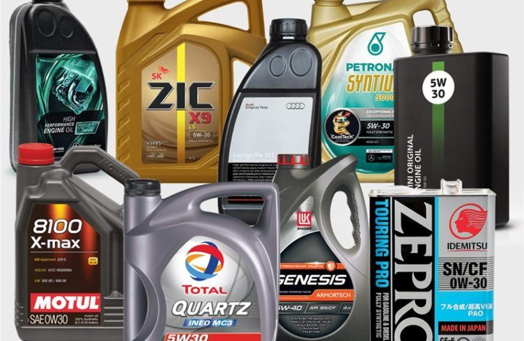

Моторными маслами называют масла, применяемые для смазывания поршневых двигателей внутреннего сгорания. В зависимости от назначения моторные масла подразделяют на масла для дизелей, масла для бензиновых двигателей и универсальные моторные масла, которые предназначены для смазывания двигателей обоих типов. Все современные моторные масла состоят из базовых масел и улучшающих их свойства присадок.
К некоторым моторным маслам предъявляют особые, дополнительные требования. Так, масла, загущенные макрополимерными присадками, должны обладать требуемой стойкостью к механической термической деструкции; для судовых дизельных масел особенно важна влагостойкость присадок и малая эмульгируемость с водой; для энергосберегающих – антифрикционность, благоприятные реологические свойства.
Для того, чтобы обеспечить долгую и надежную работу двигателя, необходима своевременная замена моторного масла. Особенно это важно для подержанного автомобиля или же, напротив, если двигатель нуждается в приработке.
Моторное масло – важный элемент конструкции двигателя.
Оно обеспечивает заданный ресурс двигателя только при точном соответствии его свойств тем термическим, механическим и химическим воздействиям, которым масло подвергается в смазочной системе двигателя и на поверхностях смазываемых и охлаждаемых деталей. Взаимное соответствие конструкции двигателя, условий его эксплуатации и свойств масла – одно из важнейших условий достижения высокой надежности двигателей.
Поэтому необходимо тщательно подходить к выбору моторного масла. По температурным пределам работоспособности моторные масла подразделяют на летние, зимние и всесезонные. В качестве базовых масел используют дистиллятные компоненты различной вязкости, остаточные компоненты, смеси остаточного и дистиллятных компонентов, а также синтетические продукты (поли-альфа-олефины, алкилбензолы, эфиры). Большинство всесезонных масел получают путем загущения маловязкой основы макрополимерными присадками.
Перед тем, как определиться с выбором моторного масла, надо разобраться с типами моторных масел и познакомиться с общепринятой классификацией и условными обозначениями.
Минеральное моторное масло производится путем перегонки и очистки нефти, синтетическое – создается синтезом газов. Полусинтетическое, как следует из названия, является их смесью. Минеральные моторные масла (нефтяные масла) производятся из нефти путем рафинирования и дистилляции. Они содержат много присадок и довольно быстро теряют свои свойства. Есть три вида минеральных масел: парафиновые, нафтеновые и ароматические. Они различаются строением входящих в их состав углеводородов (парафины, нафтены, ароматические соединения). Наиболее пригодны для производства смазочных масел парафиновые базовые масла, у них лучше характеристики по вязкости и температуре.
Сера, которая также содержится в исходном сырье, отвечает за окислительные свойства моторного масла. Если содержание серы составляет до 1%, то интенсивность износа деталей двигателя будет меньше. Если серы больше, то ее нужно удалять из исходного сырья, что приводит к удорожанию конечного продукта.
Это самый дешевый вариант, хотя и требующий частой замены. Из-за не слишком хороших качеств, данный вид моторного масла рекомендуется применять, только если не подразумевается работа двигателя в тяжелых условиях. На старых отечественных автомобилях применение минеральных масел целесообразно, поскольку оно более вязкое, следовательно, не будет подтекать в случае, например, старых изношенных сальников.
Синтетическое моторное масло производится путем синтеза определенных химических соединений для придания продукту желаемых свойств. Оно обладает рядом значительных преимуществ перед минеральным маслом:
большая текучесть позволяет уменьшить трение между деталями, что в итоге приводит к увеличению мощности и снижению расхода топлива;
низкая температура прокачивания, т.е. двигатель будет исправно и без перегрузок работать при низких температурах;
высокая температура испарения, т.е. масло не будет чувствительно к нагреву и перегреву;
химическая стабильность масла – его эксплуатационные характеристики не меняются, поскольку масло в процессе работы двигателя не окисляется и не парафинизируется;
большой срок службы.
Все эти несомненные достоинства приводят к тому, что синтетические моторные масла в разы дороже минеральных. Применение таких масел оправдывает себя там, где условия эксплуатации далеки от идеальных: низкие и высокие температуры, большие нагрузки на автомобиль.
Компромисс между этими двумя видами моторных масел – это полусинтетические моторные масла (частично синтетические) и гидрокрекинговые. Частично синтетическое масло получают смешиванием качественных минеральных (нефтяных) и синтетических базовых составляющих. В результате масло более дешевое, чем полностью синтетическое, и с лучшими эксплуатационными характеристиками, чем минеральное моторное мало. Применение полусинтетического масла целесообразно в умеренном климате и при умеренных нагрузках.
Еще один вариант улучшения характеристик минерального моторного масла – это гидрокрекинг, при котором происходит «выпрямление» углеводородов путем перегруппировки атомов, что приводит к получению изомеров.
Недостаток метода заключается в том, что изомеризация идет и в обратном направлении, поэтому гидрокрекинговое масло получается близким по качеству к синтетическому, но быстро стареет, теряет свои свойства.
Выбирая моторное масло, нужно помнить о рекомендациях производителя автомобиля. Моторные масла классом выше рекомендуемого могут быть несовместимы с неновой конструкцией мотора.
Вязкость моторного масла – это одна из основных его характеристик. От нее зависит, в первую очередь, легкость холодного пуска при низких температурах. Данная спецификация является международным стандартом и применяется повсеместно. Она определяет три рода моторных масел по вязкости: зимнее, летнее и всесезонное.
1.Зимнее масло обозначается литерой «W» и числом перед ней (от англ. «winter» – зима): SAE 0W, 5W, 10W, 15W, 20W, 25W.
2.Летнее моторное масло обозначается просто числом: SAE 20, 30, 40, 50, 60.
3.Всесезонное моторное масло–это комбинация обозначений летних и зимних видов, например, часто используемые SAE 5W30, SAE 10W-40.
«Зимний» индекс моторного масла обозначает, до какой минимальной температуры рекомендуется использовать масло. Здесь нужно воспользоваться простой формулой: из зимнего индекса вычитаете 35 и получаете минимальную температуру. Например, для моторного масла с индексом SAE 10W40 нижний предел температуры -25 градусов. Это правило справедливо для минерального моторного масла и неактуально для синтетического.
Существует две системы – американская и европейская. Обе они определяют области использования моторных масел, но вторая более строгая. Принадлежность моторного масла к определенному классу устанавливается с помощью испытаний в двигателях или стендах, моторных установках. Оцениваются моющие, противоизносные, антикоррозийные, антиокислительные и др. свойства сертифицируемых масел.
Классификация API (American Petroleum Institute – Американский институт нефти) имеет две категории масел: «S» (service) и «С» (commercial). Для бензиновых двигателей предназначены масла категории «S», а для дизельных, соответственно, – категории «C». В условных обозначениях на этикетке вы увидите двухбуквенное значение: первой будет «S» или «C», вторая буква латинского алфавита используется для обозначения качества моторного масла (чем дальше от начала алфавита, тем лучше масло). Устаревшие на сегодня классы масел (SA, SB, SC, SD, SF – для бензиновых и CA, CB, CC, CD – для дизельных) на сегодня встречаются крайне редко, а с маркировкой «A», «B» вообще не производятся. Моторные масла, относящиеся к перечисленным классам, обладают относительно низкими эксплуатационными показателями, они выпускались для двигателей, которые были менее требовательны к качеству масла.
Классификация выпускаемых на сегодня моторных масел по API выглядит следующим образом. Моторные масла для бензиновых двигателей: SG (1989), SH (1993), SJ (1996), SL (2001), SM (2004) – в скобках указано, для двигателей начиная с какого года выпуска рекомендуется данный класс масел.
Моторные масла для дизельных двигателей: CD (1955), CD-II (1987), CE (1987), CF (1994), CF-2 (1994), CF-4 (1990), CG-4 (1995), CH-4 (1998), CI-4(2002). Цифры 2 и 4 указывают на то, что масло предназначается для двух и четырехтактных двигателей соответственно.
Если на этикетке нанесено сразу обе маркировки (SJ/CH-4), значит масло является универсальным и может применяться как в бензиновых, так и дизельных двигателях. Кроме этого, в классификации API используется маркировка EC1, EC2 – так обозначаются масла, обладающие энергосберегающими свойствами, и чем больше цифра, тем выше процент экономии топлива.
Классификация ACEA (Ассоциация Европейских производителей автомобилей), появившаяся в 1996 году, более полно характеризует области применения моторных масел и уделяет больше внимания противоизносным свойствам масел. Масла маркируются буквой (А – для бензиновых двигателей, В и Е – для дизельных ) и цифрой (чем она больше, тем лучше характеристики масла). Через дефис указывается год утверждения или изменения спецификации.
Спецификации приведены ниже, группы перечислены по мере улучшения эксплуатационных характеристик.
1. Моторные масла для бензиновых двигателей легковых автомобилей, микроавтобусов, фургонов: А1-96, А2-96, А3-96, А4-98, А5-2002.
2. Моторные масла для дизелей легковых автомобилей, микроавтобусов, фургонов: B1-96; B2-96; B3-96, B4-98, В5-2002.
3. Моторные масла для двигателей тяжелых грузовиков, автопоездов: E1-96, E2-96, E3-96, E4-98, Е4-99, Е5-99.
Начиная с 2004 года в ACEA появился новый класс масел C, подходящий для использования и в бензиновых, и в дизельных двигателях.
Итак, существует несколько видов моторных масел, разделяемое по принципу его производства (минеральные, синтетические, полусинтетические и гидрокрекинговые). Кроме того, каждый из видов классифицируется по вязкости и эксплуатационным свойствам. Чтобы не запутаться во всем этом и выбрать подходящее масло, необходимо обратиться к руководству по эксплуатации автомобиля (часто производители указывают, какими характеристиками должно обладать масло для двигателя данного автомобиля). Нужно стремиться подобрать масло, максимально близкое по своим свойствам к рекомендуемому, но при этом важно ориентироваться и на конкретный мотор, его возраст, условия эксплуатации.
Необходимо учитывать:
тип двигателя, а также год его производства (не путайте с годом выпуска автомобиля);
условия эксплуатации автомобиля (средние (умеренные нагрузки «город-трасса» в умеренном климате); тяжелые (перевозки грузов, бездорожье, спортивные состязания, тропический или северный климат);
степень износа двигателя: (значительная – до 75 тыс. км; средняя – 100-150 тыс. км; повышенный износ – более 150-200 тыс. км);
совместимость примененных в двигателе материалов с конкретными видами моторных масел.
Например, в старых моторах ВАЗа сальники и прокладки, выполненные из нитрильной резины, не совместимы с современными синтетическими маслами. Если заменить эти детали аналогами из более совершенных материалов, то можно попробовать использовать и синтетические масла. При выборе масло необходимо учитывать все моменты: в какое время года чаще используется двигатель, степень его износа.
Соблюдение рекомендации производителя по использованию моторного масла – это гарантия того, что двигатель автомобиля будет исправно работать. Если рекомендуется масло 10W-40, то залить 10W-50 возможно, но необходимо помнить, что оно будет более вязким при высоких температурах (когда двигатель прогрелся и работает). А это, в свою очередь, приведет к недостаточному смазыванию определенных элементов механизма, и, как следствие, повышенному расходу топлива и ускоренному износу двигателя в целом. Использование моторного масла намного более вязкого, чем рекомендовано, чревато нежелательными последствиями: оно будет хуже прокачиваться масляным насосом по системе смазки к частям, испытывающим большое трение. Это, так называемое, «масляное голодание» мотора. Если же взять более текучее масло, чем рекомендует производитель, то следствием этого будет повышенный износ и возможная утечка масла через зазоры конструкции.
Поэтому автопроизводитель, как правило, указывает средние значения класса вязкости SAE и часто приводит поправку на условия эксплуатации. Иногда в руководстве по эксплуатации указывается конкретная марка масла. Если ваша техника находится на гарантии, лучше найти масло указанного типа у дилера или в сервисном центре, чтобы не иметь впоследствии проблем по гарантии. Если же гарантийный срок истек, можно заливать и другие марки моторных масел с подходящими характеристиками. При этом двигатель нужно будет предварительно промыть, как при переходе на другой тип масла.
Моторное масло должно сохранять свои вязкостные свойства в определенном диапазоне температур и при конкретных условиях эксплуатации. Большинство моторных масел сейчас всесезонные, но возможно выбирать отдельно масла для зимы и лета.
При выборе сезонного моторного масла необходимо ориентироваться на рекомендации производителя и делать поправку на климат.
Зимнее моторное масло должно обеспечивать запуск двигателя в холодное время года, следовательно, хорошо прокачиваться по системе смазки при низких температурах.
Наилучшим с этой точки зрения является масло класса вязкости 0W, оно сохраняет лучшую текучесть при низких температурах. Применение такого моторного масла допускается, за исключением тех случаев, когда это не рекомендуется самим производителем автомобиля. Также при выборе моторного масла нужно ориентироваться на условия эксплуатации, хранения: если автомобиль находится в отапливаемом гараже, и холодный пуск в -30 ему не грозит, можно заливать масло не SAE 0W, а более вязкое.
При выборе летнего моторного масла упор делается на способность масла сохранять вязкость и хорошо смазывать и охлаждать трущиеся детали двигателя. Это предотвращает усиленный износ и снижает вероятность перегрева и заклинивания двигателя в жару, в пробках (когда двигатель не обдувается и температура возрастает).
Производители автомобилей рекомендуют обычно класс 40 – среднее по характеристикам масло для средней полосы России, Европы. В тяжелых условиях эксплуатации, например, в экваториальных и тропических областях рекомендуется использование моторных масел с летним классом 60. Сезонное моторное масло сейчас встречается редко, и производители (например, Audi) рекомендуют его использование только в качестве временного варианта. В большинстве же случаев рекомендуется использование всесезонных моторных масел с индексами 10W-40 или 5W-30.
Смешивать разные масла не рекомендуется по причине возможной их несовместимости.
При этом важно учитывать, что если вы хотите перейти после зимы с масла с индексом 5W-40 на масло 10W-40 и обратно – такое сочетание возможно (если масло одного типа, и, желательно, от одного и того же производителя).
И еще один момент, который также относится к особенным условиям. Многие машины сегодня в целях экономии на стоимости топлива оснащаются газобаллонным оборудованием. Кроме того, что природный газ существенно дешевле бензина, он позволяет увеличить пробег между заменами масла в полтора-два раза за счет того, что в нем отсутствует «жидкая составляющая», приводящая к изменению свойств моторного масла. Для использования в таких двигателях лучше выбрать масло с «летним» классом повыше (например, SAE 50).
Важно знать, что в различное время своего жизненного цикла мотору требуется различное моторное масло. Так, для обкатки двигателя, когда детали притираются, на заводе заливается специальное моторное масло, менять которое не рекомендуется до определенного срока. Обычно это не самое лучшее масло, однако в него добавляют специальные присадки, которые улучшают приработку деталей. В период обкатки лучше применять менее качественное моторное масло, в том числе минеральное, – это способствует лучшей приработке, чем на хорошем синтетическом масле, поскольку обеспечивается большее трение. После обкатки наступает время переходить на более качественное по вязкости и температурной устойчивости моторное масло, ведь это продлит ресурс двигателя. Затем придется снижать характеристики моторного масла, поскольку при большом износе расход менее вязкого моторного масла будет неуклонно увеличиваться из-за протечек.
Таким образом, вязкость выбираемого моторного масла должна соответствовать не только рекомендациям производителя и условиям эксплуатации, но и состоянию мотора: чем сильнее изношен двигатель, тем более вязкое моторное масло придется использовать (кроме стадии обкатки).
В процессе эксплуатации автомобиля периодически приходится менять и доливать моторное масло. Обычно пробег автомобиля на одной заправке масла должен составлять 10000 км. Чаще придется менять моторное масло, если двигатель дизельный или при агрессивной езде, либо в условиях коротких зимних поездок. Моторное масло может потерять свои свойства раньше времени в изношенном моторе (в результате попадания пыли, продуктов износа, частиц, образовавшихся в результате сгорания топлива), и тогда его также придется заменить до срока. Но есть также и масла с маркировкой LongLife (буквально – «долгая жизнь»), его нужно менять после 15000-25000 км.
Также придется произвести замену моторного масла, если вы приобретаете подержанную машину; а если не знаете, что именно использовалось прежним хозяином, то лучше дополнительно промыть (для этого также существуют специальные масла).
Нужно следить за уровнем моторного масла в двигателе и, по мере необходимости, доливать – лучше всего то же самое. Как уже говорилось, смешивать моторные масла разных производителей не рекомендуется, хотя и допустимо в крайних случаях. При этом доля нового, доливаемого моторного масла не должна превышать 15%, и эту смесь необходимо как можно быстрее заменить. И уж тем более нельзя смешивать между собой масла разных видов: синтетическое с минеральным (исключительно в самых безвыходных случаях). Свойства масел при подобных смешиваниях могут ухудшиться, либо стать непредсказуемыми из-за несовместимости присадок. Допустимо смешивать синтетическое моторное масло с другими типами масел от одного производителя, только если он прямо это разрешает.
Еще немного о моторных маслах ...
Более подробно о классификации моторных масел ...